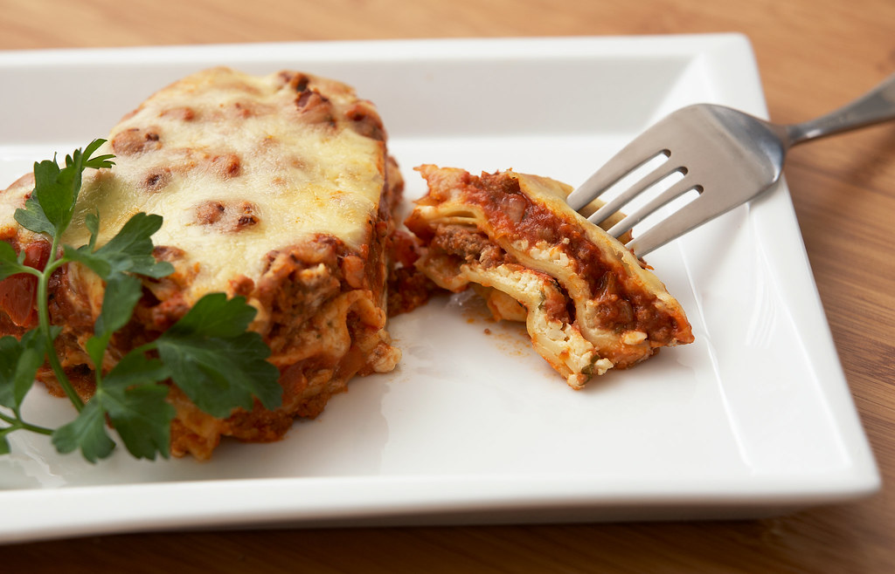

Lasagna

Description
I’m sure everyone has their own favorite go-to lasagna recipe, but I’d just like to offer that this really is The Best Lasagna Ever. Growing up, my mom and her friends used to make it for potlucks and gatherings, and part of its appeal is that the ingredients used are totally basic; you don’t have to hunt down fresh basil or buffalo mozzarella or Parmigiano-Reggiano or handmade sausage from an Italian mama in old Napoli. Anyone can make this, anywhere, anytime. And it’s the easiest thing in the world.
Ingredients
- 1 1/2 lb. ground beef
- 1 lb. hot breakfast sausage
- 2 cloves garlic, minced
- 2 cans (14.5 ounce) whole tomatoes
- 2 cans (6 ounce) tomato paste
- 4 Tbsp. dried parsley, divided
- 2 Tbsp. dried basil
- 2 1/2 tsp. salt
- 3 c. lowfat cottage cheese
- 2 whole beaten eggs
- 1/2 c. grated (not shredded) Parmesan cheese
- 1 Tbsp. olive oil
- 1 package (10 ounce) lasagna noodles
- 1 lb. sliced mozzarella cheese
Directions
- Bring a large pot of water to a boil.
- Meanwhile, in a large skillet or saucepan, combine ground beef, sausage, and garlic. Cook over medium-high heat until browned. Drain half the fat; less if you’re feeling naughty. Add tomatoes, tomato paste, 2 tablespoons parsley, basil and 1 teaspoon salt. After adding the tomatoes, the sauce mixture should simmer for 45 minutes while you are working on the other steps.
- In a medium bowl, mix cottage cheese, beaten eggs, grated Parmesan, 2 more tablespoons parsley, and 1 more teaspoon salt. Stir together well. Set aside. Add 1/2 teaspoon salt and the olive oil to the boiling water, then cook the lasagna noodles until “al dente” (not overly cooked). Drain.
- To assemble: Arrange 4 cooked lasagna noodles in the bottom of a baking pan, overlapping if necessary. Spoon half the cottage cheese mixture over the noodles. Spread evenly. Cover cottage cheese with a layer of mozzarella cheese. Spoon a little less than half the meat/sauce mixture over the top. Repeat, ending with meat/sauce mixture. Sprinkle top generously with extra Parmesan.
- Either freeze, refrigerate for up to two days, or bake immediately: 350-degree oven for 20 to 30 minutes, or until top is hot and bubbly.